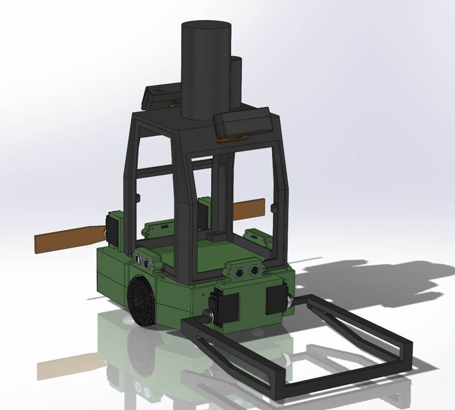
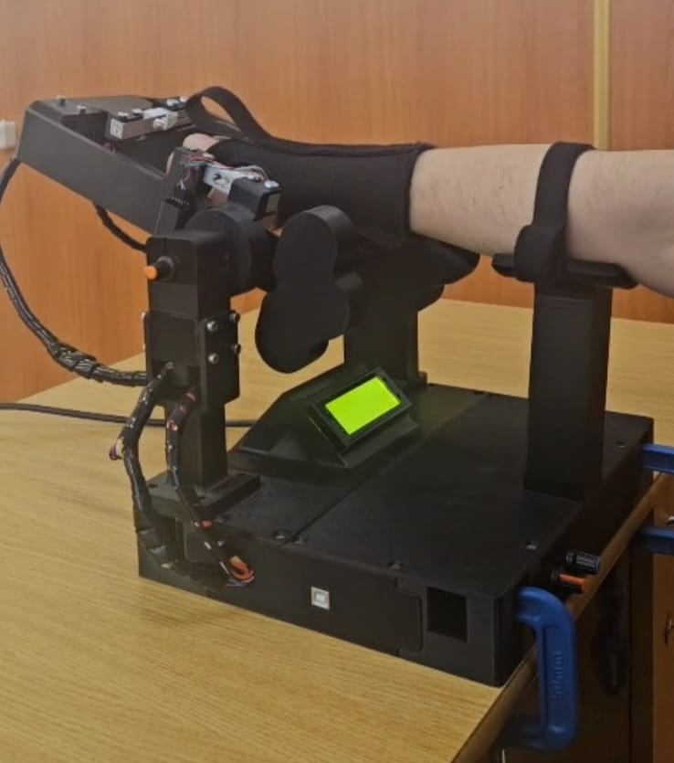
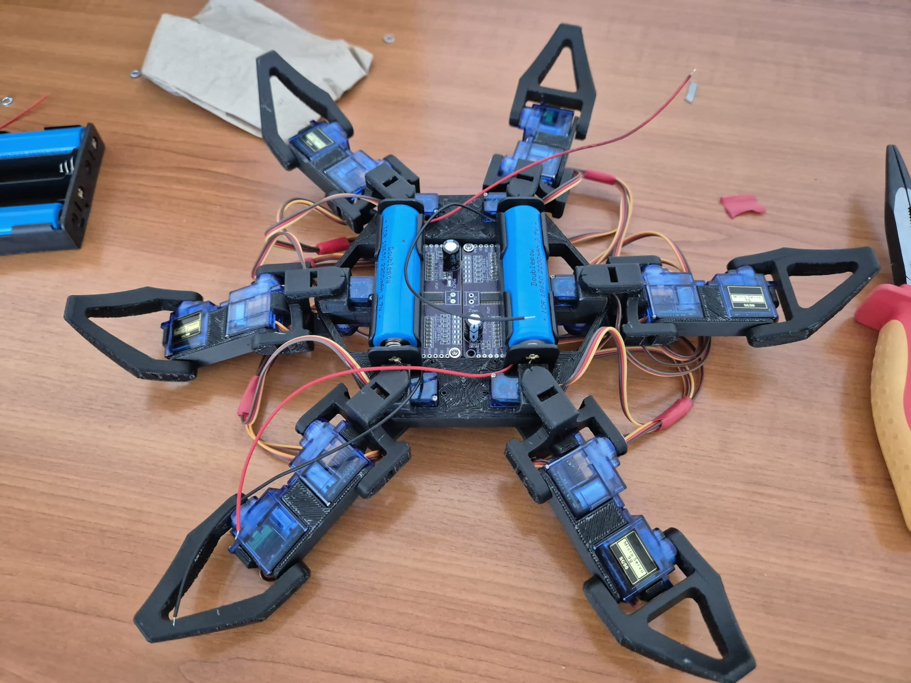
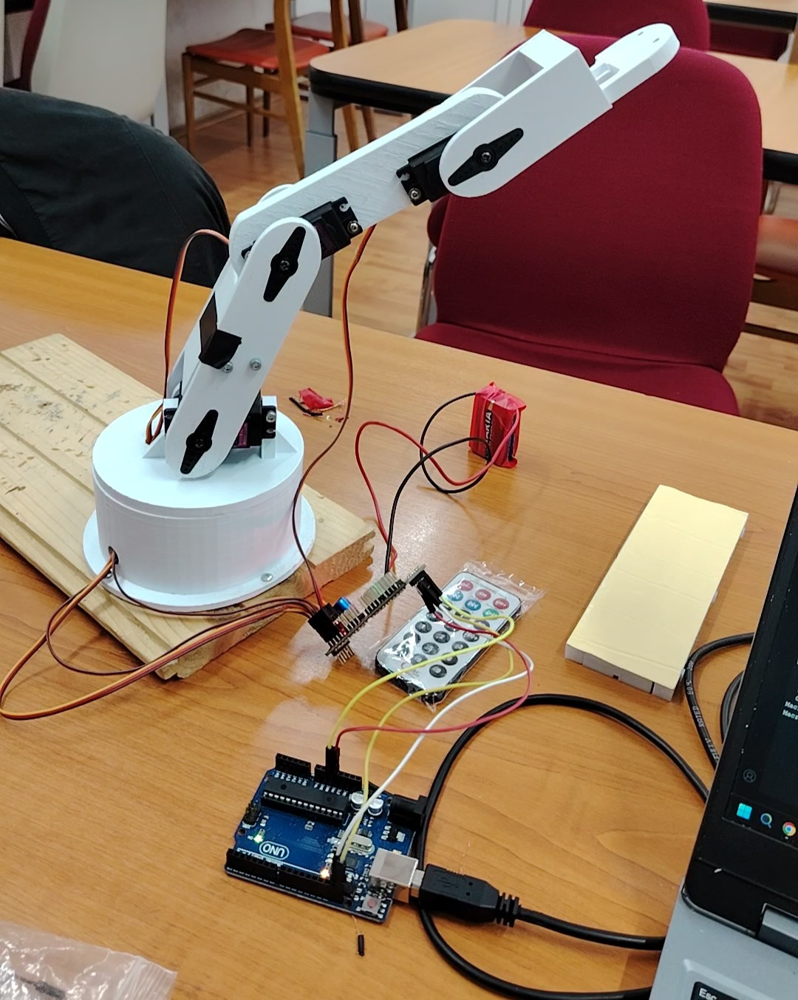
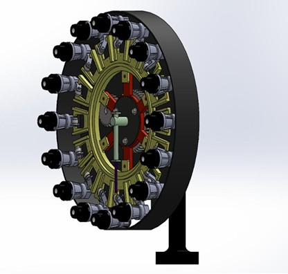

Engineered for agility and precision, our latest robot combines omnidirectional mecanum mobility with a robust, modular protective frame. It features a comprehensive sensor suite, including top-mounted LiDAR, vision cameras, and ultrasonic obstacle avoidance—paired with a wide front intake and deployable side arms to master every field challenge.

An interactive physical therapy device powered by a smooth, dual-motor resistance system. It utilizes twin load cells to accurately measure a user's strength and automatically adjust the workout intensity in real-time, ensuring a safe, guided recovery experience.

A bio-inspired robotic platform featuring a custom 3D-printed chassis and 12 servo-driven joints. Powered by dual 18650 batteries and a central microcontroller, it serves as a robust testbed for developing complex inverse kinematics and multi-legged gait control algorithms.

A custom-designed, four-degree-of-freedom manipulator. Actuated by standard servo motors and constructed with lightweight 3D-printed links, it serves as a practical testbed for developing forward and inverse kinematics algorithms, as well as pick-and-place trajectory planning.

A complete automated tool-handling system for CNC machinery. It consists of a high-capacity storage magazine for holding multiple cutting tools and a mechanized changer that automatically swaps tools into the spindle. This integrated unit enables continuous, multi-operation machining by executing pre-programmed tool changes without manual intervention, maintaining accurate and repeatable tool indexing.
We’re building something special for you. Join the journey.